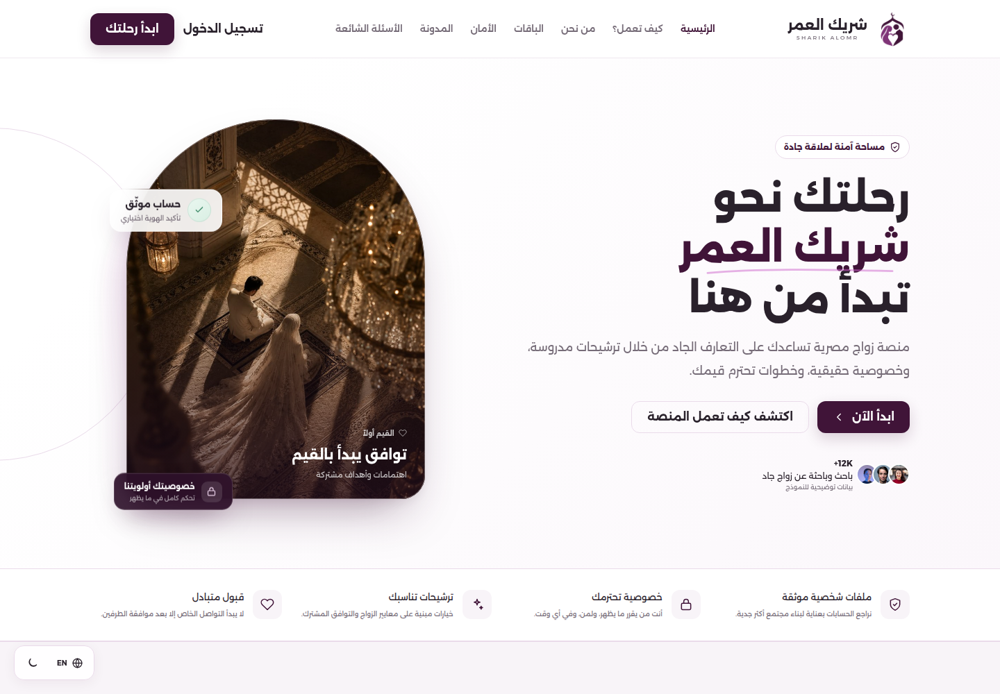
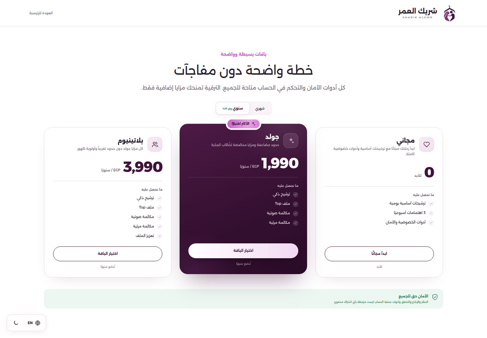
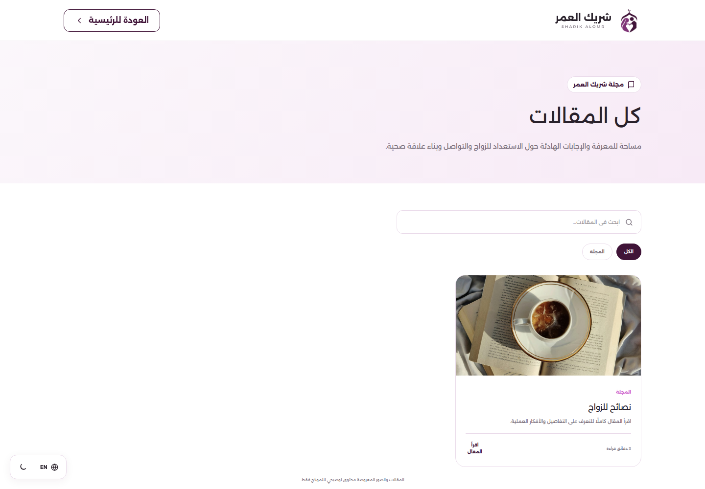
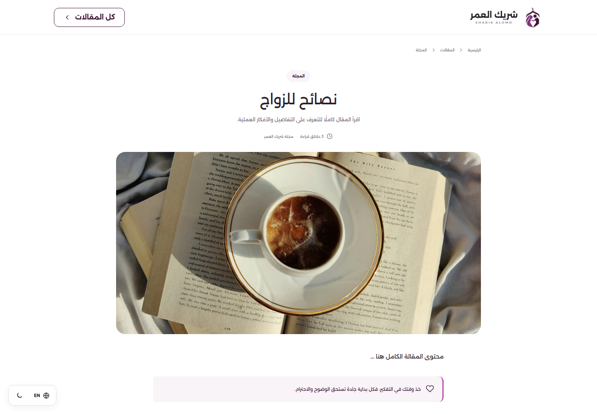
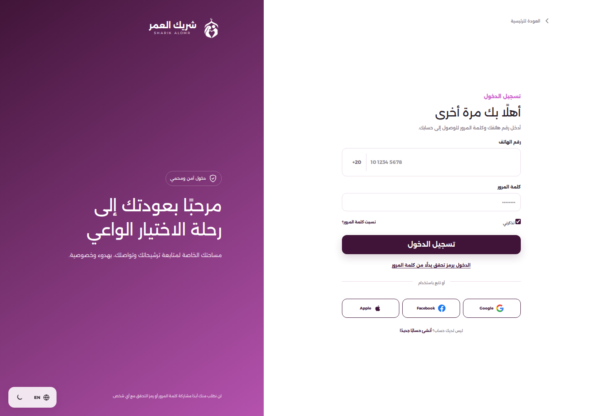
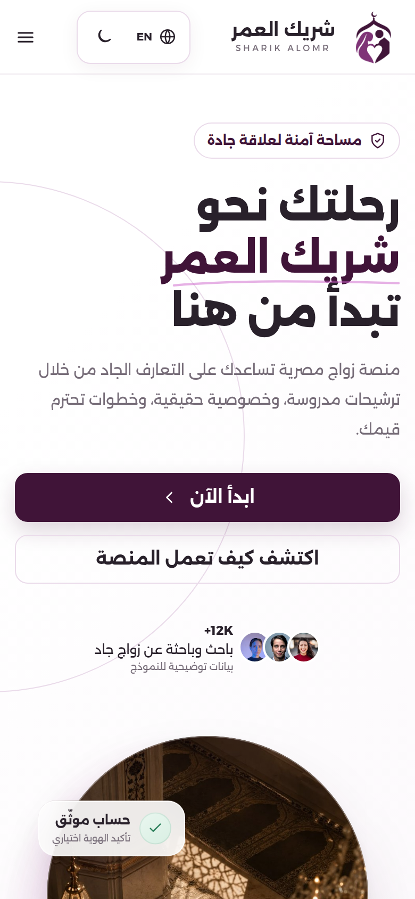
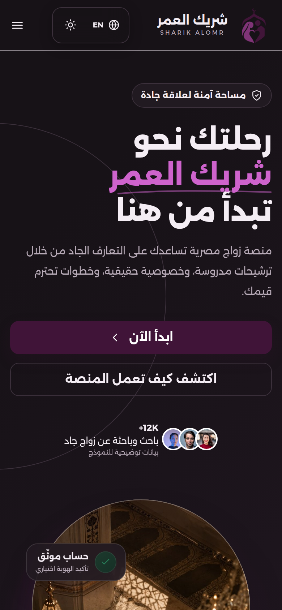
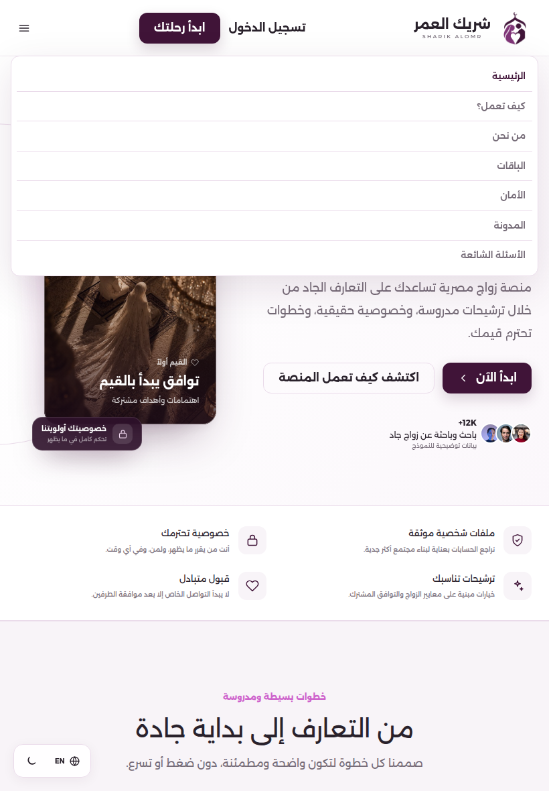

واجهة عامة كاملة
الرئيسية، الباقات، المقالات، تفاصيل المقال، وتسجيل الدخول — بتنقل سليم وهوية بصرية موحدة.
تجربة عربية بالكامل، مصادقة حقيقية، ومحتوى حقيقي من نفس قاعدة بيانات الموبايل — من غير أي تعديل في كود الموبايل.
المرحلة الأولى خلّصت الأساس اللي الويب يقوم عليه: واجهة عامة كاملة بالعربي والإنجليزي، مصادقة حقيقية بالكامل، باقات ومقالات بتتقرأ من نفس قاعدة بيانات الموبايل، وطبقة BFF مستقلة بجلسات ويب آمنة. الموبايل وباك-انده لم يتم تعديلهم.
أساس تقني سليم وقابل للتوسع: الدخول والجلسات والباقات والمقالات شغالين على بيانات حقيقية، والموبايل معزول تمامًا. المرحلة الجاية هتكمّل تجربة المستخدم جوه اللوحة والدفع.
في التطوير كود OTP بيظهر كـ devCode. في الإنتاج لازم مزود SMS حقيقي (Twilio) وOTP_DEV_ECHO=false، والسيرفر بيرفض يشتغل بإعدادات التطوير لو NODE_ENV=production.
التسليم مقسوم 6 أجزاء واضحة. كل جزء ليه وظيفة مستقلة، لكنهم شغالين مع بعض كتجربة واحدة متماسكة من أول الصفحة الرئيسية لحد تسجيل الخروج.
الرئيسية، الباقات، المقالات، تفاصيل المقال، وتسجيل الدخول — بتنقل سليم وهوية بصرية موحدة.
دخول بكلمة مرور أو OTP، تسجيل جديد، جلسة ويب آمنة، وخروج فعلي.
الباقات والمزايا من subscription_plans + plan_features، مع بطاقة مجانية تعريفية للويب.
المقالات من blog_articles، المنشور فقط، مع بحث وتصنيف وتفاصيل وعدّاد مشاهدات.
اسم المستخدم الحقيقي وحالة حسابه من /auth/me، وتسجيل خروج بيمسح الجلسة من قاعدة البيانات.
عربي RTL وإنجليزي LTR، لايت/دارك، 3 مقاسات، وتقليل الحركة — بدون overflow أفقي.
استكمال onboarding، تفعيل أقسام لوحة التحكم، الاشتراك والدفع، الإشعارات الإنتاجية، وإدارة المحتوى من الأدمن — كل دول في خطة المرحلة الثانية المفصلة في آخر التقرير.
bff/README.mdالتشغيل، المسارات، والأمانbff/prisma/web_tables.sqlجداول الويب: الجلسات و OTPbff/.env.exampleكل متغيرات البيئة المطلوبةdocs/assets/لقطات الشاشة المستخدمة في التقريراخترنا BFF منفصل بدل ما نضيف مسارات الويب جوه باك-اند الموبايل. كده الموبايل مايتأثرش، والويب ياخد احتياجاته وأمانه بشكل مستقل، والاتنين يشتغلوا على نفس البيانات.
الـ BFF بيستخدم Prisma client خاص بيه على نفس الـ DB. الجلسات في web_sessions وأكواد OTP في web_otp_codes؛ مفيش تعارض أو خلط مع جداول الموبايل.
كود الموبايل وباك-اند الموبايل لم يتم تعديلهم. الإضافة الوحيدة هي جدولين ويب جديدين على نفس قاعدة البيانات، وكل التعامل معاهم من خلال الـ BFF.
الرئيسية بقت بتعرض بيانات حقيقية: الباقات من قاعدة البيانات، آخر المقالات المنشورة، وإحصائيات الثقة — مع الحفاظ على هوية شريك العمر البصرية.

أي تعديل في قاعدة البيانات بيظهر على الويب من غير إعادة نشر، لأن الصفحة بتقرأ من الـ BFF مباشرة.
الباقات ومزاياها بتتقرأ من subscription_plans + plan_features مباشرة من قاعدة البيانات. أي تعديل في السعر أو المزايا بيظهر على الويب بدون نشر جديد.

الصفحة بتعرض الباقات والمزايا والأسعار بشكل حقيقي، لكن الاشتراك والدفع الفعلي (Paymob / Fawry) لسه في المرحلة الثانية. البطاقة المجانية تعريفية للويب فقط ومش بتغيّر بيانات باقات الموبايل.
المقالات بقت من blog_articles، والويب بيعرض المنشور فقط. البحث والتصنيف وتفاصيل المقال شغالين من نفس الـ API.


أي مقال غير منشور مش بيظهر في القائمة ولا في التفاصيل.
فلترة بالتصنيف، بحث نصي، وترتيب حسب المقال المميز ثم الأحدث.
يدعم slug أو id، وبيتعامل مع المقال غير الموجود برسالة واضحة.
المصادقة مش واجهة شكلية: المستخدم بيتسجل، بياخد كود OTP حقيقي، بيتعمل له جلسة ويب آمنة، وكل صفحة محمية بتتحقق من الجلسة دي.

رقم مصري صحيح، واختيار كلمة مرور أو OTP.
صلاحية 5 دقايق، 5 محاولات، وإعادة إرسال بعد 60 ثانية.
كوكي httpOnly لمدة 30 يوم، وخروج بيحذف الجلسة.
عند التسجيل الجديد: محفظة + رصيد ترحيب من إعدادات التطبيق.
لازم OTP_SMS_PROVIDER=twilio مع بيانات Twilio، وOTP_DEV_ECHO=false. السيرفر بيرفض يبدأ في الإنتاج لو الإعدادات لسه على وضع التطوير.
لوحة التحكم لسه مش كاملة، لكن الأساس الحقيقي اتربط: المستخدم اللي دخل فعلاً هو اللي بيظهر، والجلسة بتتحقق، وتسجيل الخروج بيمسح الجلسة من قاعدة البيانات.
دول تصميم جاهز للربط في المرحلة الثانية، ومش بنقدّمهم كوظائف مكتملة.
كلمة مرور أو OTP صحيح.
32 بايت عشوائية — مش قابل للتخمين.
HMAC-SHA256 في DB، والكوكي httpOnly.
صلاحية + حساب نشط + تحديث آخر نشاط.
حذف الجلسة من DB ومسح الكوكي.
الجلسة مش JWT مخزّن في المتصفح، والتوكن مش مخزّن خام في قاعدة البيانات. ده يقلل أثر أي تسريب، وبيسمح بإلغاء الجلسات فورًا من السيرفر.
اختبرنا الواجهة على 3 مقاسات أساسية، بالعربي والإنجليزي، لايت ودارك، مع تقليل الحركة. مفيش horizontal overflow في أي مقاس.



كل الأقسام والـ grid ظاهرة، والمسافات متوازنة.
قائمة موبايل متسقة، مفيش تداخل، والهيدر ثابت.
Hero وأزرار وبطاقات وتنقل سفلي — بدون قص أو overflow.
15 مسار وظيفي + مساري صحة، كلهم بنفس شكل الاستجابة والـ requestId. الأسماء متوافقة مع عقلية الموبايل، لكن الجلسات ويب والمصادقة مستقلة.
| المسار والطريقة | الوظيفة | الحماية |
|---|---|---|
| المصادقة | ||
| POST/api/auth/register/start | بدء تسجيل برقم الهاتف | عام |
| POST/api/auth/register/verify-otp | تأكيد OTP + إنشاء الحساب + هدية الترحيب | عام |
| PATCH/api/auth/register/profile-basics | استكمال البيانات الأساسية | جلسة |
| POST/api/auth/otp/login/start | إرسال كود دخول | عام |
| POST/api/auth/otp/login/verify | التحقق من الكود وإنشاء جلسة | عام |
| POST/api/auth/login | دخول بكلمة مرور (هاتف/بريد) | عام |
| GET/api/auth/me | بيانات المستخدم والجلسة الحالية | جلسة |
| POST/api/auth/logout | إنهاء الجلسة الحالية | كوكي |
| POST/api/auth/logout-all | إنهاء كل جلسات المستخدم | جلسة |
| POST/api/auth/set-password | تعيين كلمة مرور | جلسة |
| POST/api/auth/change-password | تغيير كلمة المرور | جلسة |
| الباقات | ||
| GET/api/subscriptions/plans | الباقات + المزايا + السعر السنوي | عام |
| المقالات | ||
| GET/api/blog/categories | تصنيفات المقالات | عام |
| GET/api/blog/articles | قائمة المقالات المنشورة + بحث/تصنيف | عام |
| GET/api/blog/articles/:slugOrId | تفاصيل مقال منشور + زيادة المشاهدات | عام |
| الصحة | ||
| GET/health | فحص الخدمة وقاعدة البيانات | عام |
| GET/api/health | نفس الفحص تحت /api | عام |
النجاح: { data, meta: { requestId, serverTime } }. الخطأ: { error: { code, message }, meta }. كل استجابة فيها x-request-id لتسهيل التتبع.
الأمان مش إضافة في الآخر؛ القرارات الأساسية اتبنت من أول يوم: جلسات مشفرة، OTP منفصل، تحقق من المدخلات، وحدود محاولات.
| الطبقة | الإجراء | الأثر |
|---|---|---|
| كوكي الجلسة | httpOnly + SameSite=Lax + Secure في الإنتاج | يمنع قراءة التوكن من JS |
| تخزين التوكن | HMAC-SHA256 فقط — مش التوكن الخام | لو الـ DB اتسربت، التوكن مش قابل للاستخدام |
| OTP | bcrypt + صلاحية 5 دقايق + 5 محاولات + منع إعادة إرسال 60 ثانية | يقلل التخمين وإساءة الاستخدام |
| حدود المحاولات | حدود على الدخول وOTP لكل IP / رقم | يقلل brute force |
| CSRF | فحص Origin للطلبات المتغيرة + same-origin proxy | يمنع طلبات من أصل غريب |
| Helmet | security headers على الـ BFF | تقليل هجمات المتصفح الشائعة |
| التحقق من المدخلات | Zod لكل body/query + حد 100KB | يمنع مدخلات غير متوقعة |
| كلمات المرور | bcrypt cost 12 | تخزين آمن حتى لو الـ DB اتسربت |
| الأسرار | من البيئة فقط + رفض إعدادات التطوير في الإنتاج | مفيش أسرار في الكود أو Git |
| التتبع | LoginAttempt + IP/User-Agent للجلسة | تدقيق أفضل عند أي مشكلة |
web_sessions وweb_otp_codes جداول ويب مستقلة. مفيش أي خلط مع otp_codes أو user_sessions الخاصة بالموبايل.
HTTPS إجباري، COOKIE_SECURE=true، TRUST_PROXY=true ورا reverse proxy، وWEB_ORIGIN على الدومين النهائي فقط.
اختبرنا المسارات الأساسية يدويًا على build إنتاجي محلي، مع بيانات حقيقية من قاعدة البيانات. كل السيناريوهات الأساسية نجحت.
| الاختبار | النتيجة | ملاحظات |
|---|---|---|
| بناء الـ BFF — npm run build | ناجح | TypeScript compile بدون أخطاء |
| بناء Next.js — npm run build | ناجح | كل الصفحات اتبنت |
| فحص الصحة + قاعدة البيانات | ناجح | database: ok |
| دخول بكلمة مرور — نجاح وفشل | ناجح | رسائل خطأ مناسبة |
| OTP — بدء، تحقق، إعادة إرسال | ناجح | كود 5 أرقام + انتهاء صلاحية |
| تسجيل حساب جديد + هدية الترحيب | ناجح | محفظة + ledger + رصيد |
| الجلسة — /me ثم logout | ناجح | الجلسة بتتحذف من الـ DB |
| الباقات + السعر السنوي | ناجح | شهريًا: 199 / 399 سنويًا: 1,990 / 3,990 |
| المقالات — قائمة، تفاصيل، بحث | ناجح | المنشور فقط |
| Production proxy — /api/bff | ناجح | كوكي same-origin |
| تجاوب 1440 / 820 / 390 | ناجح | بدون overflow أفقي |
| عربي/إنجليزي + لايت/دارك + تقليل الحركة | ناجح | كل التبديلات شغالة |
| تنظيف بيانات الاختبار | ناجح | مفيش مستخدمين تجريبيين متبقين |
مفيش اختبارات آلية أو CI/CD في المرحلة الأولى. الاختبارات كانت وظيفية يدوية على build إنتاجي. إضافة اختبارات آلية ومراقبة مستمرة في خطة المرحلة الثانية.
نسخة إنتاجية محلية: next start + BFF 4001 + PostgreSQL.
باقة جولد 199، بلاتينيوم 399، ومقال منشور واحد — ثم تم تنظيف كل بيانات الاختبار.
13 سيناريو وظيفي: بناء، صحة، دخول، OTP، تسجيل، جلسة، باقات، مقالات، تجاوب، ثيمات، وتنظيف.
التشغيل مقسوم لخدمتين: الـ BFF على 4001، وNext.js على 3000/80. Next بيعمل proxy لـ /api/bff، والكوكي يفضل same-origin.
DATABASE_URLنفس اتصال قاعدة بيانات الموبايلWEB_SESSION_SECRET32 حرفًا على الأقلWEB_ORIGINدومين الويب النهائيWEB_COOKIE_NAMEاسم كوكي الجلسةSESSION_TTL_DAYSمدة الجلسة — افتراضي 30OTP_SMS_PROVIDERtwilio في الإنتاجTWILIO_*SID + TOKEN + FROMCOOKIE_SECURE / TRUST_PROXYtrue في الإنتاج# BFF cd bff npm ci npx prisma generate psql "$DATABASE_URL" -f prisma/web_tables.sql npm run build NODE_ENV=production npm start # Next.js — على نفس السيرفر أو سيرفر منفصل BFF_URL=http://127.0.0.1:4001 npm run build npm start
المرحلة الأولى سلّمت الأساس. المرحلة الثانية هي تحويل لوحة التحكم والـ onboarding والدفع لتجربة كاملة — مع الحفاظ على نفس المعمارية.
| الأولوية | البند | النتيجة المتوقعة |
|---|---|---|
| P1 | استكمال onboarding وربطه بالـ API | ملف متكامل وجودة ملف أعلى |
| P1 | ربط أقسام لوحة التحكم | ترشيحات، بحث، رسائل، محفظة، ولي، مجتمع |
| P1 | الاشتراكات والدفع | Paymob / Fawry + إدارة الاشتراك |
| P2 | الإشعارات والتوثيق | بريد، push، وتوثيق هوية |
| P2 | إدارة المحتوى والباقات | أدمن ويب للمقالات والباقات |
| P2 | اختبارات آلية + CI/CD + مراقبة | ثقة واستقرار مع كل إصدار |
| P3 | تحسين SEO / SSR والأداء | ظهور أفضل وسرعة أعلى |
المرحلة الأولى جاهزة للمراجعة والاعتماد. بعد الاعتماد، بنحدد أولويات المرحلة الثانية ونبدأ في ربط لوحة التحكم والـ onboarding والدفع.